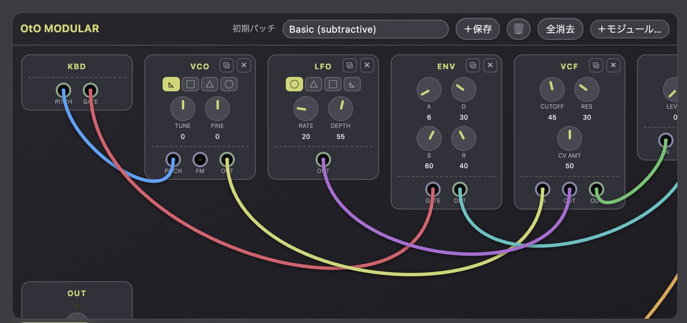
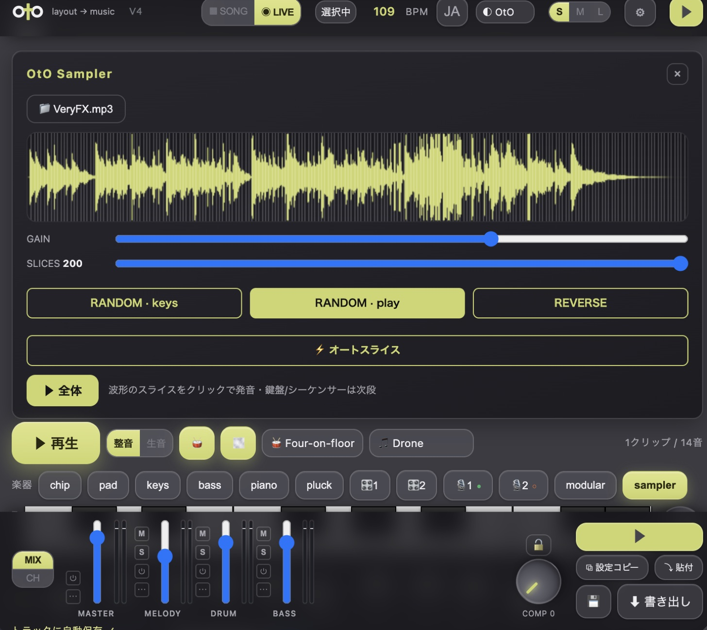
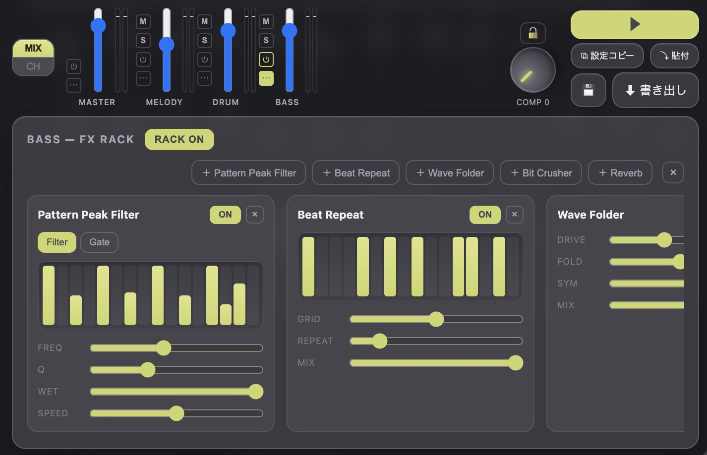

play your design.
今すぐ、出来ること。フレームを選んで ▶。デザインがそのまま音になる。整音 / 生音を切り替え、LIVE でその場演奏、SONG で並べて曲に。楽器を選び、音色を作り、WAV / MP3 で書き出す——ここまでが、今の版。
軽く、途切れず。
V4 は"パフォーマンス大改修"。これまで邪魔だった二つ——動かすほど重くなる、フレームを切り替えると一瞬固まる——を根っこから直した。同じ OtO が、ぐっと安定する。
速く、なめらかに。フレーム切替の固まりを解消。再生のカクつきと音の途切れを大幅に軽減。そして"動かすほど重くなる"がなくなった。中身は、リバーブの作り直し・スケジューラの Web Worker クロック化・メーター描画の分離・オーディオノードのリーク根治。
新しい手触りも。VOICES＝同時に鳴る音数（4〜∞）。少なくすればチップチューン的に軽く、多くすればリッチに、楽器ごとに記憶。パネルは3段階サイズ（S / M / L）＋自由リサイズでどんな画面にも。重い時は LIGHT モードで軽く。オートスライスは波形のアタックで自動分割。BPM も記憶するように。
V2 から、V3 へ。
芯（デザインが音になる）は変わらない。V2 で OtO は"スタジオ"になった——V3 で"サンプラー"にもなった：OtO Sampler、チャンネル別 FXラック、グラニュラー。すべて公開中。
| 項目 | V2 | V3 — 公開中（今） |
|---|---|---|
| 鳴らす | デザイン→音（整音/生音・LIVE/SONG） | 同じ（芯は不変） |
| 保存 | レーン＝チャンネルに自動保存（保存ボタン不要・Cmd+Z） | 同じ |
| ミキサー | トラック別チャンネルストリップ（音量/EQ/REV/DLY/PAN/COMP＋実dBメーター・M/S） | — |
| ピアノロール | 音の長さ＝バー（本物MIDI・GATEで伸縮） | — |
| ドラム | 11キット・14音色・レーン別 PAN/REV/DLY/TONE・サンプル読込 | — |
| シンセ | モジュラーシンセ（ケーブル配線・モジュール追加/削除）＋2オペFM | — |
| 仕上げ | マスターCOMP・−1dBFS正規化・WAV/MP3選択・DAWメーター | — |
| エフェクト | 全体・レーンの REV・DLY | ★ FXラック — chごとにプラグイン直列：ピークフィルター・リバーブ・ウェーブフォルダー・ビットクラッシャー・ビートリピート |
| サンプラー | ドラムでサンプル読込 | ★ OtO Sampler — 音をスライス（アタックで自動分割）してピアノロール・鍵盤で弾き、ミキサーで音作り・＋グラニュラー・モード |
V2 が変えた、三つ。
以下はすべて、今すぐ使える。中でも特に手触りが変わる三つ。
トラックごとに、整える。各レーンが1本のチャンネルに。音量・EQ・リバーブ・ディレイ・パン・コンプを個別に。実dBメーターを見ながら、赤(クリップ)にならないよう仕上げる。書き出しも、同じ音で。
ドラムが、楽器になる。808 / 909 など11キット、14音色をレーンごとに。KICK は左・HAT に残響、といったレーン別の PAN / REV / DLY / TONE。自分のサンプルを読み込んで叩ける。深さは、⋯ を押した人だけに。
ロールが、本物のMIDIに。音符が"点"ではなく、音の長さぶんの"バー"で見えるように。GATE を回せばバーが伸び、大きなデザイン要素は長い音に。デザインの大小が、そのまま曲の抑揚になる。
音を、ケーブルで組む。
OtO の中に、モジュラーシンセ。モジュールをケーブルで繋いで、音を組み立てる——電子の音が本当に作られる、その形で。そして、2オペレータの FM シンセも一緒に。

繋いだ通りに、鳴る。VCO(オシレータ)・LFO・ENV・VCF(フィルタ)・VCA を、ジャックからジャックへドラッグで配線。初期パッチ7種から始めて、触りたい人はケーブルを繋ぎ替える——モジュールは足せる・外せる・増やせる。
FM シンセも。2オペレータの FM エンジンを搭載。RATIO / DEPTH / FBK でベル・金属・グロウルベース——サブトラクティブでは届かない、あの倍音。
OtO が、サンプラーになる。
V2 で OtO は"スタジオ"になった。V3 で"サンプラー"に——好きな音を読み込めば、弾いて・刻んで・整える楽器になる。さらにチャンネル別の FXラックと、グラニュラー・モード。すべて公開中。

OtO サンプラー。好きなループや音を読み込み、等分または波形のアタックで自動的にスライスして、ピアノロール・鍵盤・波形クリックで鳴らす。メロディ・チャンネルを通るから、PAN・リバーブ・EQ・コンプ・ディレイ・音量・PITCH——見慣れたノブが全部効く。

チャンネル別の FXラック。各トラックにエフェクトを直列で積む——ピークフィルター・リバーブ・ウェーブフォルダー・ビットクラッシャー・ビートリピート。ありがちなプリセットでなく、珍しく強力なFXを。設定は保存される。
グラニュラー・モード。音を読み込むと、波形の上を無数の小さなグレイン（粒）が漂う——RATE / SIZE / PITCH / SPREAD / MOTION。普通のシンセでは届かない質感やパッドを、自分のサンプルから。
アップデートは、自動で。V2 も V3 も、そして V4 も、こうして届いた——Figma Community 経由、入れ直しは不要。あなたの OtO が、そのまま新しくなる。
新しい版を、開こう。
OtO を開いて、自分のデザインを鳴らそう。芯はここに——そして今、刻める。
figma community で開く ↗